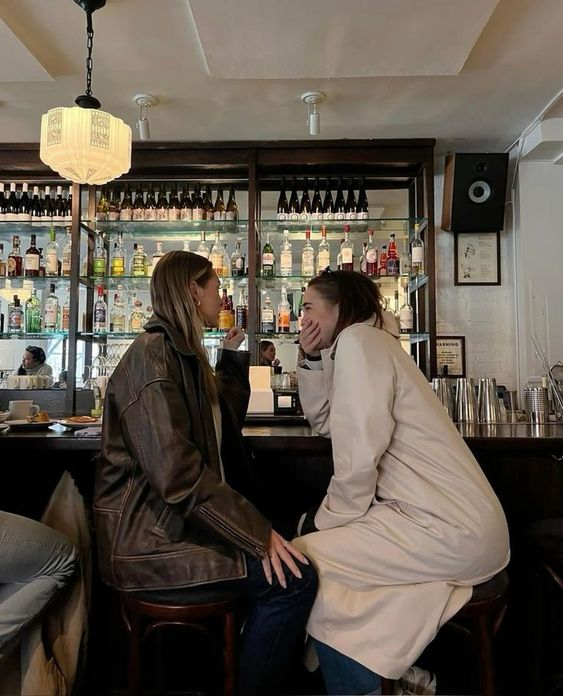
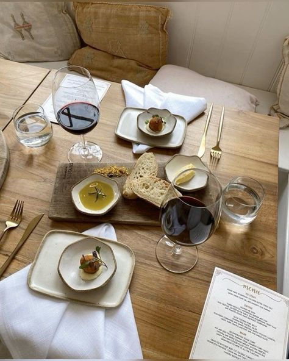
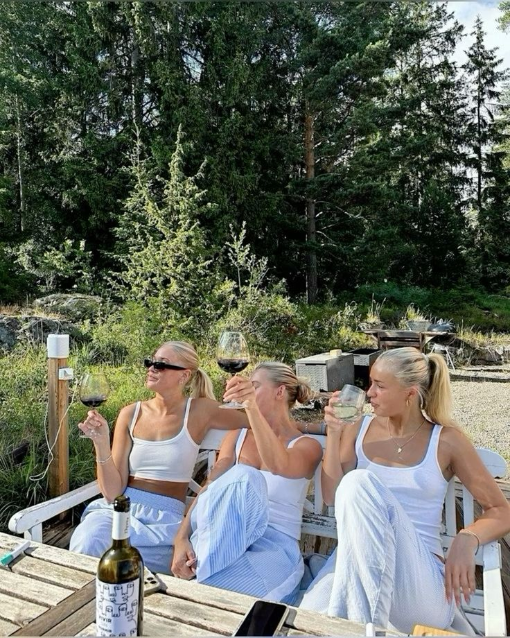

I en verden, hvor det sociale liv ofte forbindes med dyre cafébesøg, restaurantmiddage og weekendture til storbyer, kan det føles som om, at det kræver en stor pengepung at holde trit med de sociale forventninger. Men sådan behøver det ikke at være. Socials er dit online magasin, dedikeret til at vise, at det er muligt at have et rigt og meningsfuldt socialt liv – uden at sprænge banken. Vores mål er at inspirere dig til at skabe stærke fællesskaber og fantastiske oplevelser, uanset om du har et stramt budget eller blot vil prioritere dine penge klogt. Hos Socials deler vi praktiske tips, kreative ideer og inspirerende historier, der hjælper dig med at finde glæden i de små, billige og ofte oversete oplevelser. Vi tror på, at det sociale liv handler om mennesker, ikke penge. Uanset om det er en picnic i parken med hjemmelavet mad, en DIY-filmaften i stuen, eller en tur til en lokal gratis festival, er der masser af måder at have det sjovt og være social på – uden at bruge en formue. Socials er for dig, der gerne vil være en del af noget større. Dig, der elsker at være social, men ikke nødvendigvis vil bruge hele månedens budget på det. Vi dækker alt fra billige opskrifter til madlavningsaftener med vennerne, forslag til gratis arrangementer i din by, DIY-projekter til hyggelige sammenkomster, samt tips til, hvordan du kan rejse og opleve verden på et budget. Det sociale liv skal være for alle og med Socials kan du nyde fællesskabet, oplevelserne og venskaberne, uden at bekymre dig om økonomien.
  